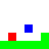
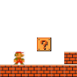

Project Pickles!!
Introduction
Hello!
ProjectPickles is a game project I'm working on using the Monogame framework.
I don't actually plan on releasing this anywhere and I don't expect it to turn into some sort of well thought out and polished game. My goal for this project is to be able to implement random features regardless of whether it fits the game or not. Some features I have in mind are: tiled-based collision (static, slopes, moving-tiles, etc.), pathfinding, finite state machines, random physics stuff such as forward/inverse kinematics, menu system (main menu, debug, inventory), etc. I will most likely be needing a guide such as a YouTube video or a blog post to implement some features; however, I am more likely going to implement it blind if I happen to have a general idea of how to implement it (collision is an example of this). For this reason, some features will probably end up buggy.
Here is a video of what I have so far. Currently, I can load levels, easily modify levels, and easily add new types of tiles. I also have a working block and slope tiled collision although incredibly buggy.
Initial Motivation
I initially started this project about 2 months ago. My main motivation stemmed from the limitations I faced when using the Fisica physics engine
(for a high-school game project assignment).
-
Unpredictability
Physics engines are cool, but they can be very unreliable at times, especially when the physics in the game deviates from the physics simulated by the engine.
-
Limited Number of Objects
The physics engine could only support up to 2048 objects for some reason.
-
Flexible Level Editing
This is actually unrelated to Fisica but I wanted to find a way to create and load levels more easily and allow the level creation to be more flexible. Initially, I would load levels from reading an image file and based on the colours, I would load certain tiles in.
  This method is okay but once you start using up more than 8 colours, it can get annoying to keep track of them. As well, it's very easy to use the wrong colour since the hex value of the colours need to be exact. It's also limited by the fact that you can only have one colour value per pixel (ex. You can't place a non-solid object and the player in the same location without hardcoding it in the game).
My brilliant solution to these limitations is to just implement my own wack collision system lol. As for the level editor, I've decided to try out the Tiled tilemap editor.
Collision System
Currently, my code is a mess and I've basically implemented the hackiest solution to everything. The main problem I had with the tile-based box collision was that the box would get stuck on the tiniest pixels. This would usually happen when moving left or up since collision checks are done from the top-left most tile.
My solution was to sort the colliding tiles based on how close they were to the box. Unfortunately due to float imprecisions, I would still get stuck on small pixels. I tried to debug this but I couldn't find a fix for it. Instead, I decided to keep track of the rows and columns that had a tile collision and skip future collision checks for that row and column.
Definitely not the best solution, but I'm trying to move away from collisions so this will do for now.
Sloped Tiles
One thing about most notable grid-based indie games such as Celeste, Hollow Knight, Spelunky, etc. is that they don't have sloped tiles. This is mostly because they suck and introduce lots of edge cases to consider. First of all, sloped tiles behave differently in that they collide with the bottom center of the box rather than the edges of the box.
For this reason, the box could be clipping inside a block tile and therefore could prevent the box from moving left or right. Luckily this is not an issue for me since I ignore collisions in the same row or column.
As for implementing slope collision, I use two values startingSlopeY and endingSlopeY which represents
how high the starting and end points are from the bottom of the tile. So if you have an upwards sloped tile, you might have startingSlopeY = 0
and endingSlopeY = 16. Then I have a directional vector at the starting point of the slope that points to the end point of the slope.
Using the directional vector, I can use linear interpolation to find how much I should "kick" up the box.